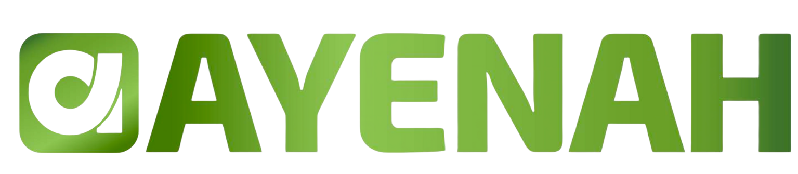
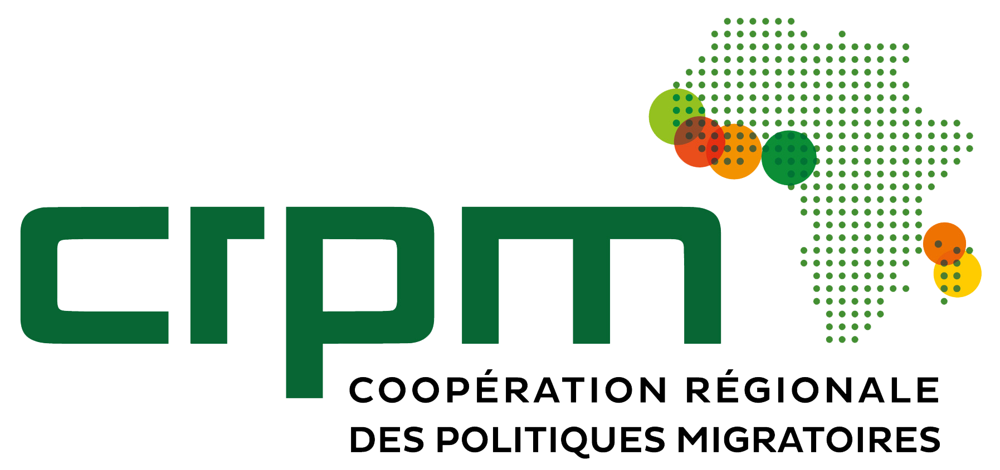
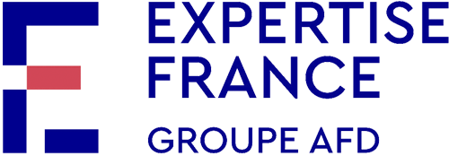
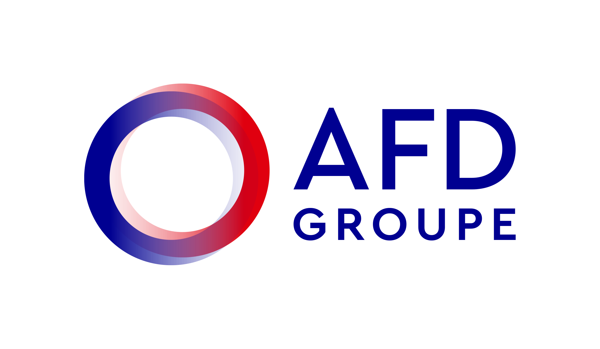

Mobiliser la diaspora ivoirienne pour le développement national grâce à une communication stratégique, ciblée et impactante.
Cliquez sur une section pour y accéder directement
Une diaspora à fort potentiel mais des défis structurels à relever
Des centaines de milliers d'Ivoiriens répartis sur 5 continents : France, USA, Italie, Allemagne, Canada…
Une diaspora qui a besoin d'être rassurée sur la crédibilité et la transparence des procédures.
Les mécanismes de transfert ne suffisent pas — il faut des dispositifs d'accompagnement concrets.
Des milliards de FCFA orientés vers la consommation plutôt que l'investissement productif.
Médecins, ingénieurs, entrepreneurs — un capital humain d'excellence prêt à contribuer.
Une fonction centrale qui conditionne l'atteinte des objectifs
Créer la notoriété d'AYENAH auprès des cibles prioritaires pour que la diaspora sache que ce dispositif existe.
Construire la confiance et susciter l'engagement. Transformer l'intérêt en candidatures concrètes.
Mobiliser les relais et ambassadeurs pour créer une dynamique collective qui amplifie le message.
Valoriser les réalisations concrètes pour démontrer l'impact et crédibiliser le modèle auprès de tous.
Ce que la communication permet de résoudre pour garantir le succès
Démontrer que ce dispositif est crédible, transparent et accessible. La communication construit cette confiance par la preuve.
Toucher, informer et engager des communautés dispersées sur plusieurs continents avec des réalités diverses.
Démontrer la compétence de la DGIE à gérer ce type de fonds dans le cadre de la PNGDI.
Produire rapidement des résultats concrets et visibles pour légitimer le modèle et préparer sa mise à l'échelle.
Documenter l'expérience pour en faire un modèle reproductible, au niveau national et dans la sous-région.
Chaque pilier nécessite une communication dédiée pour atteindre ses objectifs
Cofinancement de projets de développement portés conjointement par des associations de la diaspora et des structures locales.
Jusqu'à 50 000 € (70% max)Mobilisation des compétences des professionnels ivoiriens de l'extérieur pour des missions d'appui technique ciblées.
Frais de mission pris en chargeRenforcement des capacités de la DGIE et structuration d'un cadre d'échange pérenne entre l'État et sa diaspora.
Formations & ateliersUne communication adaptée à chaque segment pour maximiser l'impact
5 piliers complémentaires qui fonctionnent en synergie
Site web ayenah.ci, réseaux sociaux, WhatsApp, newsletter
Médias nationaux, médias diasporiques, partenariats
Relais associatifs, collectivités locales
Forums diaspora-État, ateliers régionaux, webinaires
Vidéos témoignages, infographies, kits communication
Une montée en puissance progressive sur 24 mois
Site web opérationnel, contenus prêts, réseau de relais constitué, gouvernance en place
Événement inaugural, activation digitale, campagne presse, premiers ateliers régionaux
Animation continue, accompagnement candidatures, forums diaspora, contenus de preuve
Success stories, bilan consolidé, conférence annuelle, capitalisation des enseignements
Un investissement stratégique réparti sur les piliers de l'écosystème
Une organisation claire pour garantir réactivité et cohérence
Valide les orientations stratégiques et les décisions engageant l'image institutionnelle du projet.
Assure le pilotage opérationnel : priorités, allocation des moyens, validation des contenus et reporting.
3 niveaux selon l'enjeu : contenus courants, élaborés (48–72h), stratégiques (validation politique).
Un suivi rigoureux pour piloter et optimiser les actions
Les indicateurs clés pour le reporting aux partenaires
"AYENAH repose sur la participation volontaire d'acteurs dispersés de par le monde. Sans communication efficace et ciblée, le meilleur dispositif reste invisible."
La communication n'est pas une dépense accessoire — c'est l'investissement stratégique qui permet à AYENAH de remplir sa mission.
Pour votre attention et votre engagement
Ensemble, mobilisons la diaspora ivoirienne pour construire un avenir commun.


